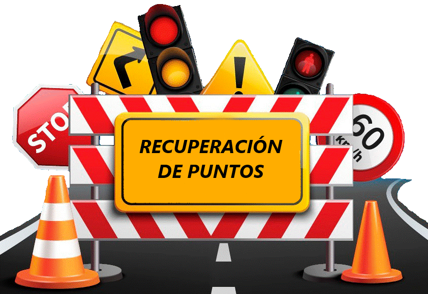
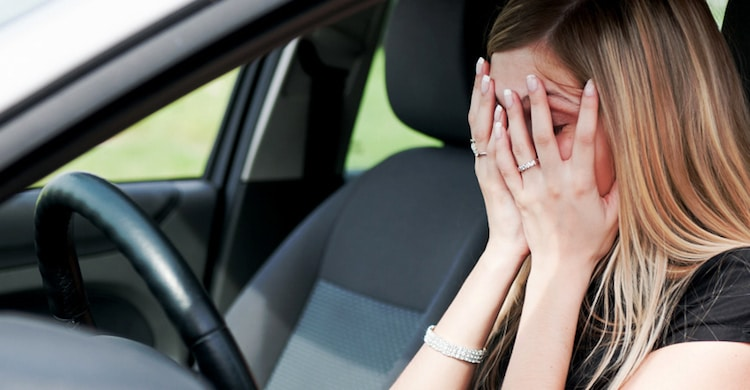
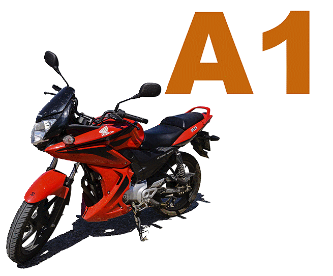
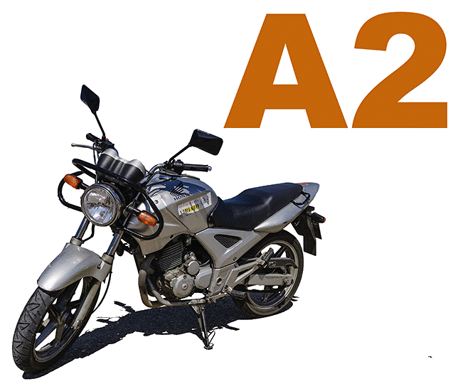
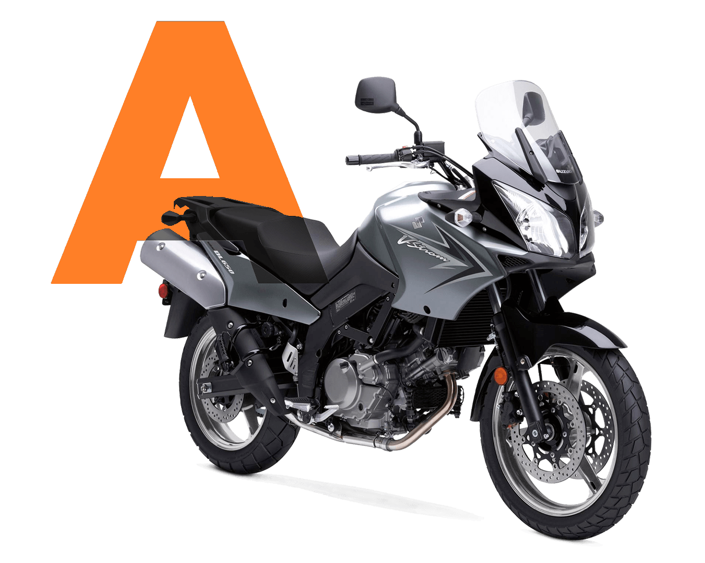
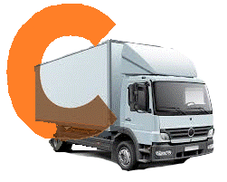
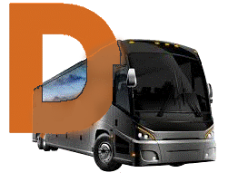

CONTENIDO:
Bloque I: Conceptos básicos
y normas de circulación.
Bloque II: Señalización de la
vía y la velocidad.
Bloque III: Elementos del
vehículo.
Bloque IV: Maniobras y
órdenes de los agentes.
Bloque V: Vehículos
especiales, seguridad al
volante y accidentes de
tráfico. OBJETIVO
Con el carnet de conducir B podrás realizar
la conducción para automóviles cuya masa
máxima autorizada no exceda de 3.500 kg.
Y que estén diseñados y construidos para
el transporte de no más de ocho pasajeros
además del conductor. MODALIDAD
TEÓRICO PRESENCIAL/ONLINE
PERMISO B

RECUPERACION DE PUNTOS Autoescuelas Am¡car
mensaje
CONTENIDO:
OBJETIVO
MODALIDAD
RECUPERACIÓN DE PUNTOS

AMAXOFOBIA Autoescuelas Am¡car
mensaje
CONTENIDO:
OBJETIVO
MODALIDAD
AMAXOFOBIA

PERMISO A1 Autoescuelas Am¡car
CONTENIDO:
L@s alumn@s deberán superar las
pruebas psicofísicas
correspondientes.
La edad mínima para obtener el
permiso es de 16 años
Teórico común : Quedará exento
de realizarlo si posee cualquier
otro permiso,
independientemente de su
antigüeda OBJETIVO
Proceeso para obtener el permiso de
conducir que permite manejar motocicletas
con una cilindrada máxima de 125 cc y una
potencia máxima de 11 kW
(aproximadamente 15 CV) MODALIDAD
TEÓRICO
PRESENCIAL/ONLINE
PERMISO A1

PERMISO A2 Autoescuelas Am¡car
CONTENIDO:
Manejar motocicletas con una
potencia de hasta 35 kW de
cualquier cilindrada. Recuerda
que para la obtención de este
permiso de moto necesitarás
ser mayor de edad. Pero si
cuentas con el carnet A1, al
menos, durante 2 años, tendrás
solamente que presentarte al
examen práctico. OBJETIVO
Si quieres sacarte el permiso de moto A2,
primero que todo, necesitas ser mayor de
edad. Además, vas a tener que presentarte a
una prueba teórica y dos prácticas, estas
últimas llevadas a cabo en un circuito
cerrado y otro abierto. MODALIDAD
TEÓRICO
PRESENCIAL/ONLINE
PERMISO A2

PERMISO A Autoescuelas Am¡car
CONTENIDO:
Tres horas de conocimientos
teóricos, dos horas de
circuito cerrado y cuatro
horas de circulación en vías
abiertas al tráfico general
Obligación de hacer horas
prácticas de conducción en
carretera convencional. Dos
de las cuatro horas de
formación en circulación en
vías abiertas al tráfico
deberá discurrir
obligatoriamente en
carretera convencional. OBJETIVO
Permite conducir cualquier tipo de
motocicleta, incluyendo triciclos de motor,
sin limitaciones de potencia o cilindrada.
Para obtenerlo, es necesario tener al menos
20 años y dos años de experiencia con el
permiso A2. MODALIDAD
TEÓRICO
PRESENCIAL/ONLINE
PERMISO A

PERMISO C Autoescuelas Am¡car
CONTENIDO:
Bloque I: El conductor y el
vehículo.
Bloque II: Normas de
circulación.
Bloque III: Uso de las vías
públicas.
Bloque IV: Reglamentación
sobre vehículos pesados.
Bloque V: Seguridad Vial.
Bloque VI: El disco diagrama
y el tacógrafo.
Bloque VII: Mantenimiento
preventivo básico. OBJETIVO
Permite conducir camiones de gran
tonelaje. Si el peso del vehículo está
entre 3500 kg y 7500 kg, se requiere la
licencia C1, que puede obtenerse a partir
de los 18 años. Con esta licencia se
permite el transporte de remolques
acoplados al camión. MODALIDAD
TEÓRICO
PRESENCIAL/ONLINE
PERMISO C
PERMISO C+E Autoescuelas Am¡car
CONTENIDO:
Para obtener este carnet de conducir es necesario tener al menos 18 años y disponer previamente del Carnet de
Conducir C. Además, será necesario superar diferentes pruebas, tales como: prueba de
conocimientos, prueba de práctica en circuito cerrado y abierto, así como la prueba de
aptitud psicofísica. Los test del carnet de tráiler se pueden realizar online y en el
momento que desees, con un horario totalmente flexible para que no tengas que interrumpir
tus jornadas laborales, entre muchas otras actividades. OBJETIVO
Permite circular por las vías públicas a los mandos de un vehículo que podrá
arrastrar un remolque de más de 750 Kg.,destinado al transporte de mercancías o
un semirremolque arrastrado por una cabeza tractora, cuyo conjunto podrá mover una M.M.A. MODALIDAD
TEÓRICO
PRESENCIAL/ONLINE
PERMISO C+E

PERMISO D Autoescuelas Am¡car
CONTENIDO:
Bloque I: La vía.
Bloque II: El vehículo.
Bloque III: El conductor.
Bloque IV: La conducción.
Bloque V: El transporte de
viajeros.
Bloque VI: El tacógrafo.
Bloque VII Los neumáticos y
los frenos.
Bloque VIII: La conducción
nocturna o con
meteorología adversa. OBJETIVO
Adquirir los conocimientos necesarios para la obtención del Permiso D1-D. Conocer las técnicas y procesos
involucrados en la conducción, seguridad vial y transporte de vehículos de viajeros de más de 9 plazas (incluido el
conductor). MODALIDAD
TEÓRICO
PRESENCIAL/ONLINE
PERMISO D
NUESTROS CENTROS
Amicar O Barco
Av. Conde de Fenosa, 18, 32300 O Barco, Ourense
📞 698 17 66 95
Amicar A Rúa
Rúa Felgar, 13, 32350 A Rúa, Ourense
📞 988 50 82 95
Amicar Viana do Bolo
Rúa Nicolás Tenorio, 1, 32550 Viana do Bolo, Ourense